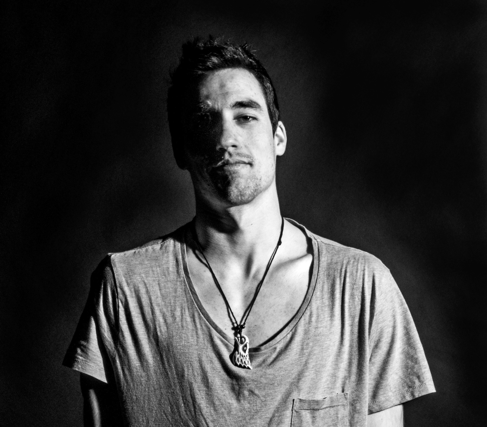
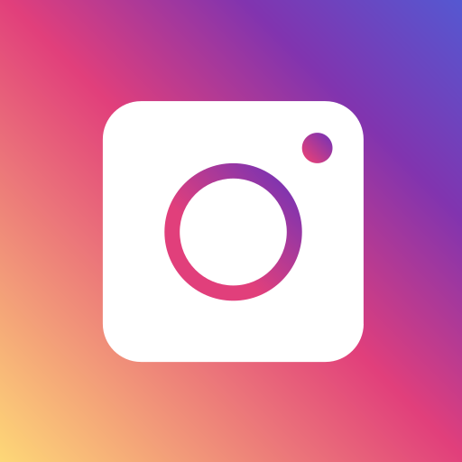

Hi! I'm Roy.
This is my UX portfolio.
I love designing simple
digital user experiences.

About me
Hi! I'm Roy. I was born in Madrid, Spain, and since I was a kid, I was in love with two things: gymnastics and technology. Mainly, because of how effortless and enjoyable they seemed to be, while "hiding" a great level of underlying complexity.
I got a degree in Sport Sciences in 2014, and for a few years I spent most of my time trying to become the best athlete I could be, which was fun. Nowadays you cand find me either in tech hackathons with one of my best friends, hanging out with my practice group, or trying to make a responsive UX portfolio in the 1st try... or at the 726th one.
All in all, I started designing around 2015, and still learning something new every single day. I’m actively looking for an internship, or an entry-level UX job in order to keep growing.
You can contact me on roysugoi@gmail.com or on social media:

Hi! I'm Roy. I was born in Madrid, Spain, and since I was a kid, I was in love with two things: gymnastics and technology. Mainly, because of how effortless and enjoyable they seemed to be, while "hiding" a great level of underlying complexity.
I got a degree in Sport Sciences in 2014, and for a few years I spent most of my time trying to become the best athlete I could be, which was fun. Nowadays you cand find me either in tech hackathons with one of my best friends, hanging out with my practice group, or trying to make a responsive UX portfolio in the 1st try... or at the 726th one.
All in all, I started designing around 2015, and still learning something new every single day. I’m actively looking for an internship, or an entry-level UX job in order to keep growing.
You can contact me on roysugoi@gmail.com or on social media: